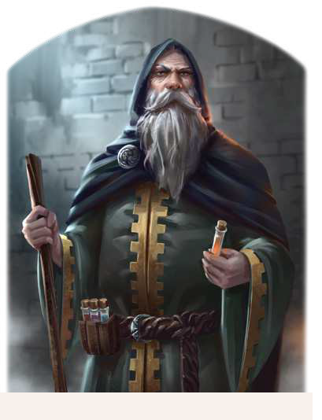

"Erzähl mir nichts, ich habe den menschlichen Geist in vielen jahren bis zur Voillendung studiert. Du fürchtest dich - und ich allein vermag dir diese Angst zu nehmen. Das kostet dich allerdings eine Kleinigkeit. Ich brauche dein Blut und eine Strähne deines Haars, dann wirst du befreit sein."
Archon Megalon war einst der Hofdruide der albernischen Fürsten und ist als Autor auch in magischen Fachkreisen bekannt, seit er über Angst und ihre Auswirkungen auf den menschlichen Geist publizierte. Er ist ein äußerst skrupelloser Druide, der nur wenig mit den weisen Männern des Waldes gemein hat, die man hinter einer solchen profession meist vermutet. Stattdessen spielt er mit Menschen und missbraucht sie ohne große Gewissensbisse als Versuchsobjekte in seinen Experimenten. Angst und Schrecken sind sein Fachgebiet, und so verwundert es nicht, dass er in Geschichten als Schauergestalt für albernische Kinder dient. Der in Würde gealterte, äußerst scharfsinnige Druide soll heute unter falschem Namen in Havena leben und dort in den Schatten der Gassen seine insteren Pläne verfolgen. Immer wieder ist er auf der Suche nach neuen Probanden für seine Versuche, seien es leichtfertige Opfer oder solche, deren Mut geradezu legendär ist. Sein Ziel ist es, ihren Willen zu brechen, denn nur so kann der versierte Menschenkenner seine magischen und weltlichen Theorien beweisen.
Volkes Stimme
- "Ja, was musst du wissen? Er hat mir die Angst genommen. Großartiger Kerl."
- "Nein, ich sage nichts dazu, kein Wort! Kein einziges! Ich fürchte die Konsequenzen mehr als den Tod."